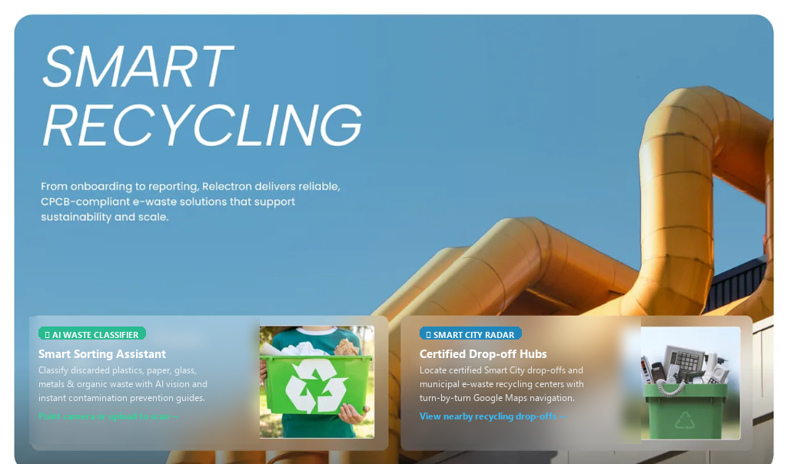
120 XP
Eco Experience
4 Days
Daily Streak
18
Items Sorted
24.6 kg
CO₂ Diverted
Test Model with Real Sample Images
Click any test image below to evaluate GreenScan's AI classification, preprocessing filters, and recycling recommendations instantly:
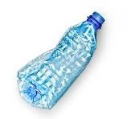
▶ Test Now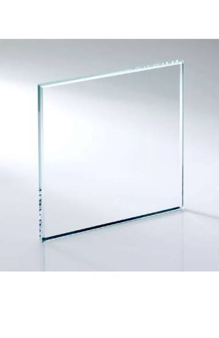
▶ Test Now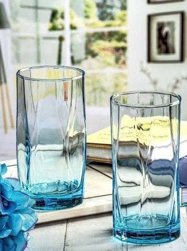
▶ Test Now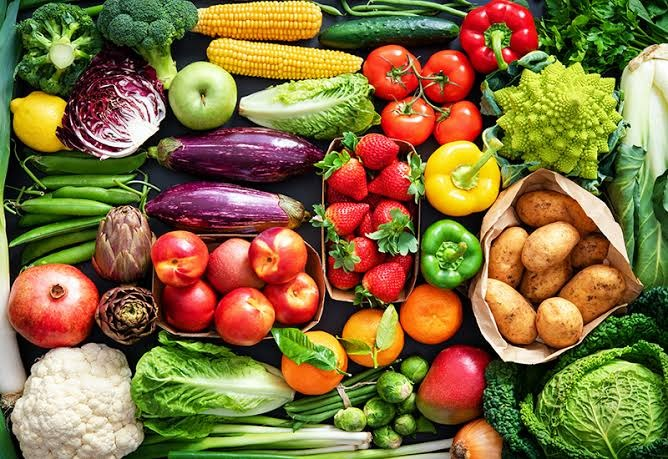
▶ Test Now🔍 AI Waste Classifier
 1. Normalized RGB
1. Normalized RGB
 2. Feature Filter
2. Feature Filter
Inspection Ticket Waiting
Scan or upload a recyclable item to generate disposal instructions, bin color, and instant eco-quiz.
Plastic Recyclable
Smart City Central Recycling & Recovery Park
Sector 4 Industrial Zone, Hyderabad
✅ Proper Do's
- Rinse to clear leftover food or liquid.
- Check for resin recycling codes #1 or #2.
❌ Critical Don'ts
- Never mix with wet kitchen waste.
- Do not leave caps loose if forbidden locally.
Recommended Recycling & DIY Videos
Watch how this material is recycled and creative upcycling guides
Recycling a single aluminum can saves enough energy to run a TV for 3 hours!
Dataset We Use: Kaggle Garbage Classification
Integrated with Kaggle dataset asdasdasasdas/garbage-classification via kagglehub.
# Download latest version
path = kagglehub.dataset_download("asdasdasasdas/garbage-classification")
print("Path to dataset files:", path)
Checking Kagglehub dataset cache...
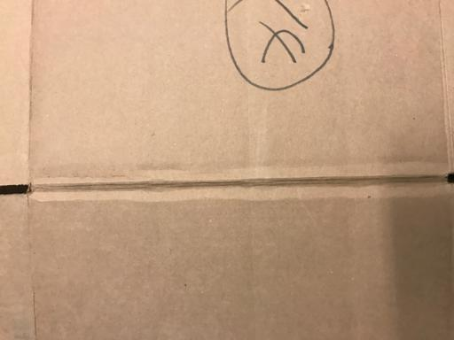
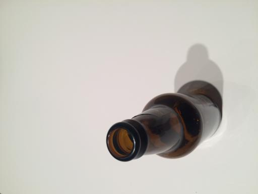
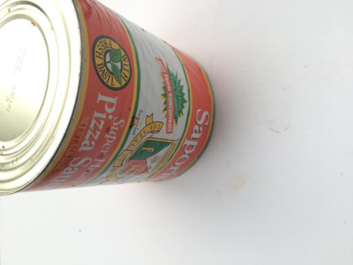
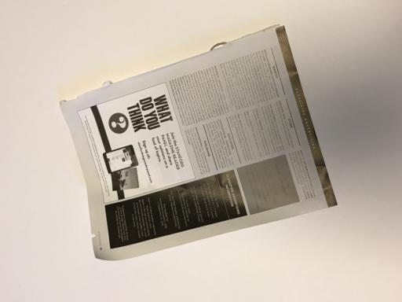
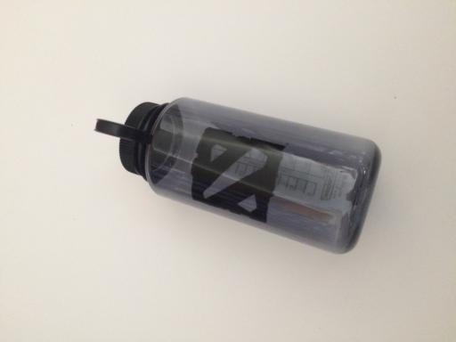
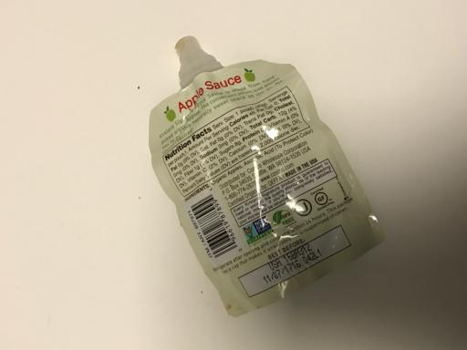
The 3D Wastedex Collector
Scan and discover all 6 primary waste streams to achieve Zero Waste Champion status.
Plastic
Discovered ✓Paper & Cardboard
Discovered ✓Metal
Discovered ✓Glass
Locked 🔒Organic
Locked 🔒E-Waste
Locked 🔒Google Maps Recycling Center Navigator
Live GPS positioning & instant turn-by-turn driving directions to certified Smart City drop-offs.
Smart City Eco Leaderboard
Compete with fellow green citizens, earn rewards, and climb the sustainability rankings.
| Rank | Eco Warrior | Badge | Experience | Items Sorted | Streak |
|---|
About Us & Engineering Team
Engineering Design Project (EDP) — Computer Science and Engineering
B P S Kruthi
24951A05E9Led the Computer Vision model pipeline, Kagglehub dataset engineering, interactive UI architecture, real-time prediction heuristics, and gamified sustainability modules.
Anreddy Lahari
24951A05F0Spearheaded multi-language localization (11 languages), YouTube recycling knowledge curation, Google Maps GPS navigation hub, and IEEE conference paper documentation.
Transfer Learning Vision
Trained on Kaggle Garbage Classification dataset with high-precision feature extractors for 6 primary waste streams.
11-Language Engine
Instant localized advice in English, Telugu, Hindi, Tamil, Kannada, Marathi, Gujarati, Bengali, Spanish, French, and German.
YouTube Video & Search
Embedded video guides and one-click topic search links to master zero-waste DIY upcycling methods.
Smart City Navigator
Interactive Google Maps GPS drop-off center locator with turn-by-turn driving directions.